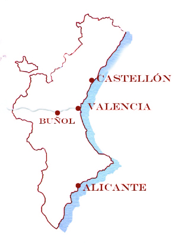
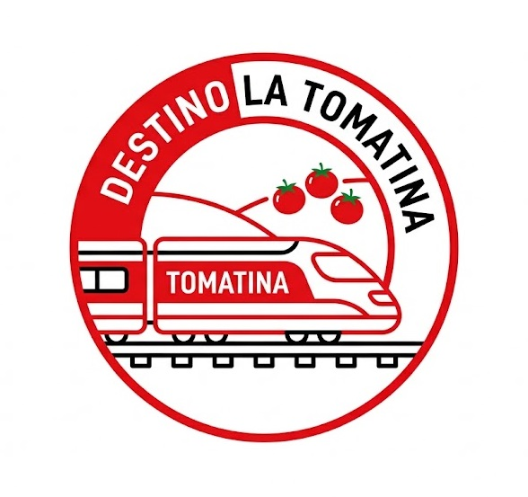

La Tomatina se celebra en Buñol (Valencia), un pueblo muy fácil de alcanzar si organizas mínimamente el trayecto. La opción más práctica suele ser el tren: desde Valencia salen trenes regionales que tardan unos 40–50 minutos y, para el día del evento, suelen añadirse servicios extra.
Si vienes de ciudades grandes como Madrid o Barcelona, lo ideal es llegar primero a Valencia en AVE o bus y desde allí hacer el trasbordo a Buñol.

También puedes ir en autobús, ya que en fechas de la fiesta varias compañías programan rutas especiales. Si prefieres ir en coche, es totalmente posible, pero debes tener en cuenta que el pueblo se llena muchísimo y a menudo cortan accesos al centro; lo normal es acabar dejando el coche en zonas más alejadas y caminar un poco.
Pagina de la tomatina creada para proyecto de Diseño de Interfaces Web